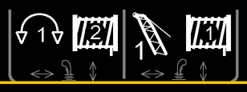
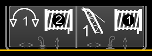
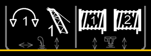

Position 5 bis 8 (Funktionsbelegung der Bedienhebel)

Funktionsbelegung der Bedienhebel bei einer Maschine mit zwei Kreuz-Bedienhebeln

Fig. 1555: Bildschirmausschnitt Funktionsbelegung der Bedienhebel (mit zwei Kreuz-Bedienhebeln)
Fig. 1555: Bildschirmausschnitt Funktionsbelegung der Bedienhebel (mit zwei Kreuz-Bedienhebeln)
In Abhängigkeit der angesteuerten Komponenten ändern sich die angezeigten Funktionsbelegungen.
Die auf Position 5 angezeigte Funktionsbelegung, wird durch die Bewegung des linken Kreuz-Bedienhebels nach rechts oder nach links ausgeführt (beispielhaft mit Anzeige Geschwindigkeitsstufe des Drehwerks).
Die auf Position 6 angezeigte Funktionsbelegung, wird durch die Bewegung des linken Kreuz-Bedienhebels nach vorne oder nach hinten ausgeführt (beispielhaft mit Anzeige Winde2).
Die auf Position 7 angezeigte Funktionsbelegung, wird durch die Bewegung des rechten Kreuz-Bedienhebels nach rechts oder nach links ausgeführt (beispielhaft mit Anzeige Geschwindigkeitsstufe des Hauptauslegers).
Die auf Position 8 angezeigte Funktionsbelegung, wird durch die Bewegung des rechten Kreuz-Bedienhebels nach vorne oder nach hinten ausgeführt (beispielhaft mit Anzeige Winde1).

Fig. 1556: Taste Funktionsbelegung bestätigen
Fig. 1556: Taste Funktionsbelegung bestätigen
Taste Funktionsbelegung bestätigen
Funktionsbelegung wurde automatisch geändert.
Bedienhebelbelegung bestätigen.

Funktionsbelegung der Bedienhebel bei einer Maschine mit einem Kreuz-Bedienhebel und einem Doppel-T-Bedienhebel

Fig. 1558: Bildschirmausschnitt Funktionsbelegung der Bedienhebel (mit einem Kreuz-Bedienhebel und einem Doppel-T-Bedienhebel)
Fig. 1558: Bildschirmausschnitt Funktionsbelegung der Bedienhebel (mit einem Kreuz-Bedienhebel und einem Doppel-T-Bedienhebel)
In Abhängigkeit der angesteuerten Komponenten ändern sich die angezeigten Funktionsbelegungen.
Die auf Position 5 angezeigte Funktionsbelegung, wird durch die Bewegung des linken Kreuz-Bedienhebels nach rechts oder nach links ausgeführt (beispielhaft mit Anzeige Geschwindigkeitsstufe des Drehwerks).
Die auf Position 6 angezeigte Funktionsbelegung, wird durch die Bewegung des linken Kreuz-Bedienhebels nach vorne oder nach hinten ausgeführt (beispielhaft mit Anzeige Geschwindigkeitsstufe des Hauptauslegers).
Die auf Position 7 angezeigte Funktionsbelegung, wird durch die Bewegung des rechten innenliegenden Doppel-T-Bedienhebels nach vorne oder nach hinten ausgeführt (beispielhaft mit Anzeige Winde1).
Die auf Position 8 angezeigte Funktionsbelegung, wird durch die Bewegung des rechten außenliegenden Doppel-T-Bedienhebels nach vorne oder nach hinten ausgeführt (beispielhaft mit Anzeige Winde2).

Anzeige Geschwindigkeitsstufe des Drehwerks
Geschwindigkeitsstufe 1 des Drehwerks ist gewählt.
Anzeige Geschwindigkeitsstufe des Drehwerks
Geschwindigkeitsstufe 2 des Drehwerks ist gewählt.
Anzeige Geschwindigkeitsstufe des Drehwerks
Geschwindigkeitsstufe 3 des Drehwerks ist gewählt.

Anzeige Drehwerksfreilauf
Drehwerksfreilauf ist eingeschaltet.

Anzeige Drehwerk gesperrt
Drehwerk ist gesperrt.

Anzeige Winde2
Winde2 ist gewählt.
Anzeige Winde2 gesperrt
Winde2 ist gesperrt.
Anzeige Montagezylinder
Montagezylinder ist gewählt.

Anzeige Geschwindigkeitsstufe des Hauptauslegers
Geschwindigkeitsstufe 1 des Hauptauslegers ist gewählt.
Anzeige Geschwindigkeitsstufe des Hauptauslegers
Geschwindigkeitsstufe 2 des Hauptauslegers ist gewählt.
Anzeige Geschwindigkeitsstufe des Hauptauslegers
Geschwindigkeitsstufe 3 des Hauptauslegers ist gewählt.
Anzeige Hauptausleger gesperrt
Hauptausleger ist gesperrt.

Anzeige Geschwindigkeitsstufe des Nadelauslegers
Geschwindigkeitsstufe 1 des Nadelauslegers ist gewählt.
Anzeige Geschwindigkeitsstufe des Nadelauslegers
Geschwindigkeitsstufe 2 des Nadelauslegers ist gewählt.
Anzeige Geschwindigkeitsstufe des Nadelauslegers
Geschwindigkeitsstufe 3 des Nadelauslegers ist gewählt.
Anzeige Mechanischer Greifer
Mechanischer Greifer ist gewählt.

Anzeige Bohrantrieb1
Bohrantrieb1 ist gewählt.

Anzeige Hilfswinde
Hilfswinde ist gewählt.
Anzeige Hilfswinde gesperrt
Hilfswinde ist gesperrt.

Anzeige Winde1
Winde1 ist gewählt.
Anzeige Winde1 gesperrt
Winde1 ist gesperrt.

Anzeige Windengleichlauf
Windengleichlauf ist eingeschaltet.